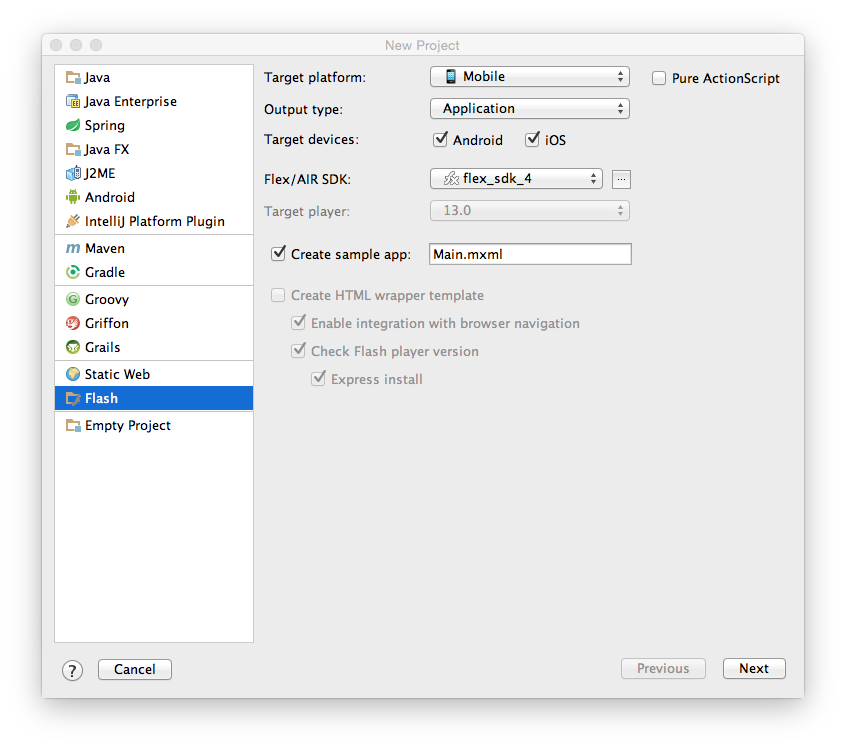
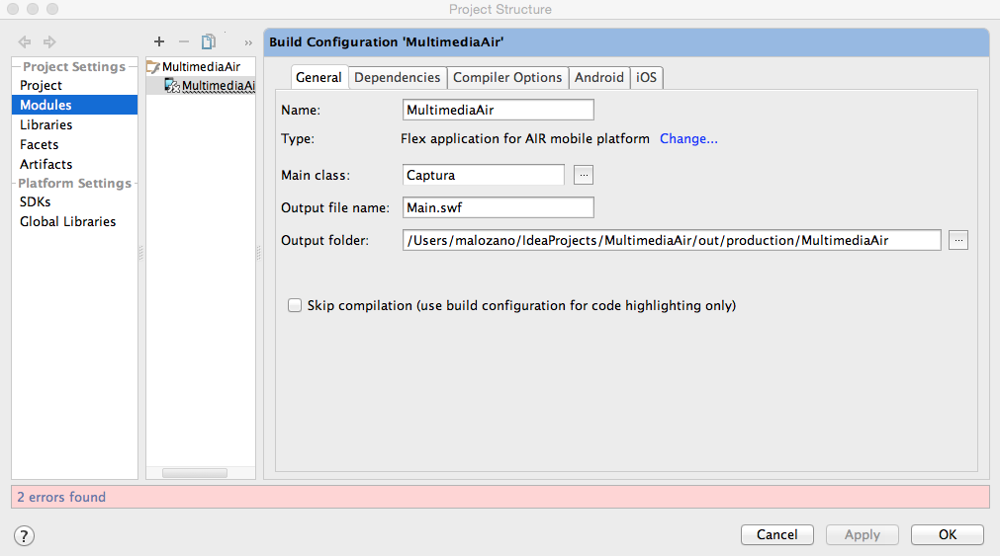

Aplicaciones Adobe Air¶
Adobe Air es una tecnología multiplataforma que nos permite llevar las aplicaciones Flash y ActionScript a distintos dispositivos. Tenemos la opción de crear estas aplicaciones con la herramienta Flash, o bien utilizar el compilador abierto Flex. Vamos a centrarnos en el desarrollo de aplicaciones Adobe AIR con Flex SDK.
Instalación de Flex y AIR SDK¶
Vamos a ver los pasos que deberemos seguir para instalar los SDK de Flex y Adobe AIR:
- En primer lugar deberemos descargar Apache Flex SDK:
http://flex.apache.org
-
Ejecutaremos el instalador, y éste se encargará de descargar todos los elementos necesarios, incluyendo Adobe AIR y Flex SDK.
-
Introduciremos el directorio
$FLEX_SDK_HOME/binen elPATHpara así tener el compilador accesible. Esto podemos hacerlo editando el fichero.bash_profilede nuestra carpeta personal ($HOME) e introduciendo al comienzo la siguiente línea:export PATH=$PATH:/ruta/a/flex_sdk/bin/
Con esto ya podremos utilizar las herramientas de desarrollo de Flex y Adobe AIR desde línea de comando.
Aplicaciones Adobe AIR desde línea de comando¶
Vamos a ver en primer lugar la forma de crear una aplicación Adobe AIR en línea de comando, y posteriormente estudiaremos la forma de hacerlo desde un entorno integrado como IntelliJ.
Creación de un proyecto en línea de comando¶
-
En primer lugar crearemos un fichero XML descriptor de la aplicación como el siguiente, al que llamaremos
HolaMundo-app.xml:<?xml version="1.0" encoding="UTF-8"?> <application xmlns="http://ns.adobe.com/air/application/2.7"> <id>es.ua.eps.HolaMundo</id> <versionNumber>1.0</versionNumber> <filename>HolaMundo</filename> <initialWindow> <content>HolaMundo.swf</content> </initialWindow> <supportedProfiles>mobileDevice</supportedProfiles> </application> -
Tras definir el descriptor, introduciremos el código ActionScript de la clase principal de la aplicación. Por ejemplo, podríamos crear un fichero
HolaMundo.ascomo el siguiente:package { import flash.display.Sprite; import flash.text.TextField; public class HolaMundo extends Sprite { public function HolaMundo() { var textField:TextField = new TextField(); textField.text = "Hola mundo!"; stage.addChild(textField); } } }
Construcción de un proyecto en línea de comando¶
Una vez creado un proyecto, deberemos construirlo utilizando las herramientas en línea de comando de Flex SDK:
-
En primer lugar compilaremos el código de nuestra aplicación. Los fuentes podrán ser clases ActionScript (
.as) o fichero MXML (.mxml). En cualquiera de los dos casos deberemos compilarlos conamxmlc:Esto generará un fichero SWF (en el ejemplo anterioramxmlc HolaMundo.asHolaMundo.swf). -
Una vez compilado podemos lanzar la aplicación con la herramienta
adl, especificando el descriptor XML:En el fichero XML se indica que la ventana inicial está en un ficheroadl HolaMundo-app.xmlHolaMundo.swf, que es el fichero que hemos generado como resultado de la compilación en el paso anterior, y será el que se ejecute.
Por último, deberemos crear un APK o IPA para poder instalar la aplicación en dispositivos Android o iOS.
Creación de un APK para Android¶
Para crear el APK en primer lugar deberemos crear un certificado con el que firmar la aplicación:
adt -certificate -validityPeriod 25 -cn SelfSigned 1024-RSA cert.pfx mipassword
Esto deberemos hacerlo una única vez. Una vez tengamos un certificado, podremos generar el APK firmado con el siguiente comando:
adt -package -target apk -storetype pkcs12 -keystore cert.p12 HolaMundo.apk HolaMundo-app.xml HolaMundo.swf
Podremos copiar este fichero APK a dispositivos Android para instalar la aplicación en ellos.
Creación de un IPA para iOS¶
En el caso de iOS tendremos que generar un IPA firmado con nuestro certificado de desarrollador. Para ello deberemos exportar el certificado (y la clave privada) desde Acceso a llaveros a un fichero .p12, protegiéndolo con una contraseña. Al crear el IPA deberemos proporcionar este fichero .p12, su contraseña, y el perfil de aprovisionamiento .mobileprovision:
adt -package -target ipa-debug
-keystore cert.p12 -storetype pkcs12 -storepass mipassword
-provisioning-profile ios.mobileprovision
HolaMundo.ipa HolaMundo-app.xml HolaMundo.swf iconos Default.png
Una vez generado el fichero IPA podremos probarlo en un dispositivo móvil copiándolo a iTunes y sincronizando con el dispositivo.
Aplicaciones Adobe AIR con IntelliJ¶
Podemos crear aplicaciones Adobe AIR desde el entorno IntelliJ.
Creación de un proyecto¶
Para crea un proyecto AIR en primer lugar seleccionaremos la opción Archivo > New Project... y el tipo de proyecto Flash. Dentro de este tipo configuraremos el proyecto de la siguiente forma:

- Como Target platform indicaremos Mobile
- Como Output type indicaremos Application
- Marcamos las plataformas para las que queremos generar la aplicación (Android e iOS).
- Si marcamos la casilla Create sample app nos creará un fichero
.mxmlcomo plantilla inicial de la aplicación. - Debemos indicar el SDK de Flex y Adobe AIR a utilizar. Si no tenemos ninguno configurado todavía deberemos pulsar sobre el botón
...junto a este campo para configurar uno. Este proceso de configuración del SDK se explica en el siguiente apartado.
Configuración del SDK¶
Si no tenemos configurado todavía un SDK, pulsaremos sobre el botón ... junto al campo de selección de SDK para configurar uno nuevo. Esto tendremos que hacerlo sólo la primera vez que vayamos a crear un proyecto Adobe AIR.
En la pantalla Configure SDK añadiremos un SDK del tipo Flex/AIR SDK:

Seleccionaremos en el disco el directorio donde tenemos combinados Flex SDK y AIR SDK.
Es recomendable también que en la pestaña Documentation Paths del SDK que acabamos de añadir introduzcamos la URL en la que podemos encontrar la referencia de la API de ActionScript:

Referencia API ActionScript 3: http://help.adobe.com/en_US/FlashPlatform/reference/actionscript/3/
Ejecución del proyecto¶
Una vez creado el proyecto, podemos ejecutarlo en el escritorio mediante la opción Run > Run 'Nombre del proyecto' o pulsando el botón de reproducción en la barra superior derecha:

Podemos también configurar el perfil de ejecución del proyecto para indicar si queremos ejecutar en emuladores, dispositivos reales, Android o iOS. Esto lo haremos con la opción Run > Edit Configurations.... Nos aparecerá una pantalla como la siguiente:

Creación de artefactos¶
Podemos añadir al proyecto tanto ficheros ActionScript como ficheros MXML, pulsando sobre él con el botón derecho y seleccionando la opción New > ActionScript Class o New > MXML Component:

Si añadimos una clase ActionScript podríamos introducir el código del Hola Mundo que realizamos en un apartado anterior.
Podemos hacer que la clase que hemos creado sea la clase principal de la aplicación entrando en File > Project Structure... > Modules y modificando el campo Main class de nuestro módulo:

Aplicaciones multimedia con Adobe AIR¶
Reproducción de vídeo¶
Podemos reproducir vídeo con un objeto de tipo Video. En primer lugar, podemos instanciar un objeto de este tipo y añadirlo a la pantalla con addChild. En este ejemplo se muestra este componente abarcando todo el espacio de la escena (stage):
video_playback=new Video(stage.width, stage.height);
video_playback.x=0;
video_playback.y=0;
addChild(video_playback);
Una vez creado el visor de vídeo, creamos una conexión para acceder al vídeo remoto. En caso de querer acceder a video HTTP por descarga progresiva o vídeo local estableceremos la conexión pasando null como parámetro a connect. Sólo pasaremos una dirección cuando vayamos a conectar con un Flash Media Server:
nc = new NetConnection();
nc.connect(null);
Tras crear la conexión, crearemos a partir de ella un NetStream
ns_playback=new NetStream(nc);
ns_playback.addEventListener(AsyncErrorEvent.ASYNC_ERROR, asyncErrorHandler);
Tenemos que proporcionar obligatoriamente un método para tratar los objetos de error, aunque los ignoremos, ya que de no hacerlo así obtendremos un error:
function asyncErrorHandler(event:AsyncErrorEvent):void
{
}
Por último, vinculamos el NetStream con el reproductor de vídeo y comenzamos la reproducción proporcionando la URL del vídeo a reproducir:
video_playback.attachNetStream(ns_playback);
ns_playback.play("http://jtech.ua.es/dadm/video.mp4");
A continuación vemos el ejemplo completo del reproductor de vídeo:
public class Reproductor extends Sprite {
private var nc:NetConnection;
private var ns_playback:NetStream;
private var video_playback:Video;
public function Reproductor() {
// Mantiene la pantalla siempre encendida
NativeApplication.nativeApplication.systemIdleMode = SystemIdleMode.KEEP_AWAKE;
playbackNetStream();
}
private function playbackNetStream():void {
// Crea reproductor de video
video_playback=new Video(stage.width,stage.height);
video_playback.x=0;
video_playback.y=0;
addChild(video_playback);
// Crea flujo de video
nc = new NetConnection();
nc.connect(null);
ns_playback=new NetStream(nc);
ns_playback.addEventListener(AsyncErrorEvent.ASYNC_ERROR, asyncErrorHandler);
// Muestra el flujo en el reproductor
video_playback.attachNetStream(ns_playback);
ns_playback.play("http://jtech.ua.es/dadm/video.mp4");
}
function asyncErrorHandler(event:AsyncErrorEvent):void
{
}
}
}
Reproductor desde Flash Media Server¶
La reproductor de vídeo proveniente de un Flash Media Server difiere del caso anterior en que previamente debemos establecer la conexión con este servidor.
En primer lugar realizaremos la conexión y definiremos un método de callback para que nos avise cuando la conexión esté establecida:
nc = new NetConnection();
nc.addEventListener(NetStatusEvent.NET_STATUS, netStatusHandler);
nc.connect(connectionURL);
Implementaremos el callback netStatusHandler de forma que cuando se haya establecido la conexión comience la reproducción del vídeo:
private function netStatusHandler(event:NetStatusEvent):void {
switch (event.info.code) {
case "NetConnection.Connect.Success" :
// Se ha establecido la conexión
playbackVideo();
break;
}
}
La reproducción del vídeo se hará de forma similar al caso anterior:
private function playbackVideo():void {
video_playback=new Video(cam.width,cam.height);
video_playback.x=cam.width+20;
video_playback.y=10;
addChild(video_playback);
ns_playback=new NetStream(nc);
ns_playback.addEventListener(NetStatusEvent.NET_STATUS, netStatusHandler);
video_playback.attachNetStream(ns_playback);
ns_playback.play("mp4:sample.mp4");
}
En este caso, en el método play indicaremos el nombre del vídeo a reproducir dentro del Flash Media Server
Captura desde la cámara¶
Podemos de forma sencilla reproducir en pantalla vídeo capturado con la cámara. En primer lugar crearemos un objeto Camera:
cam=Camera.getCamera();
Este método obtiene la cámara por defecto del dispositivo. Con Camera.names podríamos ver los nombres de todas las cámaras disponibles, y con Camera.getCamera(nombre) podríamos obtener cualquiera de ellas.
También podemos configurar la calidad del vídeo capturado por la cámara:
cam.setMode(320,240,15);
cam.setQuality(200000,0);
cam.setKeyFrameInterval(15);
De la misma forma, también podríamos especificar la captura del micrófono, en este caso mediante un objeto Microphone:
mic = Microphone.getMicrophone();
mic.rate = 8;
mic.setSilenceLevel(0,-1);
Una vez hecho esto, podemos vincular con attachCamera la cámara al visor de vídeo, y con esto comenzará a mostrarse en pantalla:
video_playback=new Video(stage.width,stage.height);
video_playback.x=0;
video_playback.y=0;
addChild(video_playback);
video_playback.attachCamera(cam);
Podemos ver el ejemplo completo a continuación:
private function cameraPlayback():void {
cam=Camera.getCamera();
cam.setMode(320,240,15);
cam.setQuality(200000,0);
cam.setKeyFrameInterval( 15 );
video_playback=new Video(stage.width,stage.height);
video_playback.x=0;
video_playback.y=0;
addChild(video_playback);
video_playback.attachCamera(cam);
}
Emisión vía streaming RTMP¶
Una vez visto como mostrar vídeo de una URL, de un servidor Flash Media Server, y de la cámara, vamos a ver cómo podemos capturar vídeo de la cámara y enviarlo a un servidor RTMP.
Lo primero que deberemos hacer es establecer la conexión con el servidor RTMP:
nc = new NetConnection();
nc.addEventListener(NetStatusEvent.NET_STATUS, netStatusHandler);
nc.connect("rtmp://www.eps.ua.es:1935/live");
Definimos el siguiente callback con el que estaremos pendientes del momento en el que se establece la conexión con el servidor, para empezar a publicar, y del momento en el que comienza la publicación, para comenzar a mostrar un preview en nuestra aplicación:
private function netStatusHandler(event:NetStatusEvent):void {
switch (event.info.code) {
case "NetConnection.Connect.Success" :
// Se ha establecido la conexión
publishVideo();
break;
case "NetStream.Publish.Start" :
// Ha comenzado la emisión
playbackVideo();
break;
}
}
Cuando se haya establecido la conexión podremos comenzar la publicación de vídeo. Esto lo haremos con el método publish de la clase NetStream. Antes podremos configurar la calidad del vídeo que vamos a retransmitir:
private function publishVideo():void {
ns_publish=new NetStream(nc);
var h264Settings:H264VideoStreamSettings = new H264VideoStreamSettings();
h264Settings.setProfileLevel( H264Profile.BASELINE, H264Level.LEVEL_3_1 );
ns_publish.videoStreamSettings = h264Settings;
ns_publish.addEventListener(NetStatusEvent.NET_STATUS, netStatusHandler);
cam=Camera.getCamera();
cam.setMode(320,240,15);
cam.setQuality(200000,0);
cam.setKeyFrameInterval( 15 );
mic = Microphone.getMicrophone();
mic.rate = 8;
mic.setSilenceLevel(0,-1);
ns_publish.attachCamera(cam);
ns_publish.attachAudio(mic);
ns_publish.publish("miCanal.stream");
}
Una vez detectemos que la publicación ha comenzado, podríamos reproducir el vídeo publicado en el servidor:
private function playbackVideo():void {
video_playback=new Video(stage.width,stage.height);
video_playback.x=0;
video_playback.y=0;
addChild(video_playback);
ns_playback=new NetStream(nc);
ns_playback.addEventListener(NetStatusEvent.NET_STATUS, netStatusHandler);
video_playback.attachNetStream(ns_playback);
ns_playback.play("miCanal.stream");
}
A continuación se muestra el ejemplo completo:
public class MiStream extends Sprite {
private var connectionURL:String="rtmp://www.eps.ua.es/live";
private var videoURL:String="miCanal.stream";
private var nc:NetConnection;
private var ns_publish:NetStream;
private var ns_playback:NetStream;
private var video_playback:Video;
private var cam:Camera;
private var mic:Microphone;
public function MiStream() {
// Mantiene la pantalla siempre encendida
NativeApplication.nativeApplication.systemIdleMode = SystemIdleMode.KEEP_AWAKE;
// Establece conexion con la URL
nc = new NetConnection();
nc.addEventListener(NetStatusEvent.NET_STATUS, netStatusHandler);
nc.connect(connectionURL);
}
private function netStatusHandler(event:NetStatusEvent):void {
switch (event.info.code) {
case "NetConnection.Connect.Success" :
// Se ha establecido la conexión
publishVideo();
break;
case "NetStream.Publish.Start" :
// Ha comenzado la emisión
playbackVideo();
break;
}
}
private function publishVideo():void {
ns_publish=new NetStream(nc);
var h264Settings:H264VideoStreamSettings = new H264VideoStreamSettings();
h264Settings.setProfileLevel( H264Profile.BASELINE, H264Level.LEVEL_3_1 );
ns_publish.videoStreamSettings = h264Settings;
ns_publish.addEventListener(NetStatusEvent.NET_STATUS, netStatusHandler);
cam=Camera.getCamera();
cam.setMode(320,240,15);
cam.setQuality(200000,0);
cam.setKeyFrameInterval( 15 );
mic = Microphone.getMicrophone();
mic.rate = 8;
mic.setSilenceLevel(0,-1);
ns_publish.attachCamera(cam);
ns_publish.attachAudio(mic);
ns_publish.publish(videoURL);
}
private function playbackVideo():void {
video_playback=new Video(stage.width,stage.height);
video_playback.x=0;
video_playback.y=0;
addChild(video_playback);
ns_playback=new NetStream(nc);
ns_playback.addEventListener(NetStatusEvent.NET_STATUS, netStatusHandler);
video_playback.attachNetStream(ns_playback);
ns_playback.play(videoURL);
}
}
Autenticación de la fuente de vídeo¶
Si requerimos usuario y password para poder publicar vídeo RTMP en Wowza desde nuestra aplicación Adobe AIR, estas credenciales se pueden proporcionar como parámetros del método NetConnection.connect:
nc.connect(connectionURL, "publisher", "mastermoviles");
Sin embargo, en Wowza no podremos utilizar la configuración de autenticación estándar en RTMP, sino que necesitaremos añadir un módulo adicional. De hecho, deberemos dejar abierto el acceso a la aplicación vía RTMP desde la interfaz de Wowza para poder utilizar dicho módulo. Para ello:
- Entramos en el administrador de Wowza, en la página de nuestra aplicación, por ejemplo
live. - Entramos en la sección Source Security y editamos la configuración.
- En RTMP Sources indicamos Open (no authentication required).
Incorporaremos ahora la autenticación RTMP mediante el módulo adicional moduleOnConnectAuthenticate. Dicho módulo se encuentra dentro de una colección de módulos adicionales que se proporcionan para Wowza en la siguiente página:
http://www.wowza.com/forums/content.php?113-Module-Collection
Para instalar y configurar el módulo de autenticación deberemos:
- Descargar e instalar la colección de módulos anterior. Deberemos copiar el fichero
wms-plugin-collection.jaren el directorio${WOWZA_HOME}/lib, siendo${WOWZA_HOME}el directorio de instalación de Wowza. - Añadimos la configuración del módulo al fichero
Application.xmlde la aplicación a configurar. Por ejemplo, si queremos configurar la aplicaciónlive, buscaremos dicho fichero en${WOWZA_HOME}/conf/live. En el ficheroApplication.xml, introduciremos la siguiente configuración dentro de la etiqueta<Modules> ... </Modules>:<Module> <Name>moduleOnConnectAuthenticate</Name> <Description>Authenticates Flash connections.</Description> <Class>com.wowza.wms.plugin.collection.module.ModuleOnConnectAuthenticate</Class> </Module> - Por defecto buscará la lista de usuarios en el fichero
${WOWZA_HOME}/conf/connect.password. Podemos copiar el ficheropublish.passwordque se encuentra en el mismo directorio para utilizar los mismos usuarios para publicación que hemos configurado en Wowza.
Después de hacer esto reiniciaremos el servidor y tendremos habilitada la autentificación de fuentes RTMP con compatibilidad para el método NetConnection.connect.
Configuración de la aplicación Android¶
En el descriptor XML de la aplicación podemos especificar todos los permisos que necesitaríamos para esta aplicación en la plataforma Android. Podríamos tener algo como lo siguiente:
<application xmlns="http://ns.adobe.com/air/application/13.0">
<id>es.ua.eps.MiStream</id>
<versionNumber>0.0.1</versionNumber>
<filename>MiStream</filename>
<initialWindow>
<content>MiStream.swf</content>
<fullScreen>true</fullScreen>
<aspectRatio>any</aspectRatio>
</initialWindow>
<supportedProfiles>mobileDevice</supportedProfiles>
<android>
<manifestAdditions>
<![CDATA[
<manifest>
<uses-feature android:name="android.hardware.camera"/>
<uses-feature android:name="android.hardware.microphone"/>
<uses-feature android:name="android.hardware.camera.autofocus"/>
<uses-permission android:name="android.permission.ACCESS_CHECKIN_PROPERTIES"/>
<uses-permission android:name="android.permission.ACCESS_NETWORK_STATE"/>
<uses-permission android:name="android.permission.CAMERA"/>
<uses-permission android:name="android.permission.CHANGE_WIFI_MULTICAST_STATE"/>
<uses-permission android:name="android.permission.DISABLE_KEYGUARD"/>
<uses-permission android:name="android.permission.INTERNET"/>
<uses-permission android:name="android.permission.MODIFY_AUDIO_SETTINGS"/>
<uses-permission android:name="android.permission.RECORD_AUDIO"/>
<uses-permission android:name="android.permission.VIBRATE"/>
<uses-permission android:name="android.permission.WAKE_LOCK"/>
<uses-permission android:name="android.permission.WRITE_EXTERNAL_STORAGE"/>
<uses-permission android:name="com.google.android.glass.permission.DEVELOPMENT"/>
<application>
<activity>
<intent-filter>
<action android:name="android.intent.action.MAIN"/>
<category android:name="android.intent.category.LAUNCHER"/>
</intent-filter>
<intent-filter>
<action android:name="android.intent.action.VIEW"/>
<category android:name="android.intent.category.BROWSABLE"/>
<category android:name="android.intent.category.DEFAULT"/>
<data android:scheme="ggstream"/>
</intent-filter>
</activity>
</application>
</manifest>
]]>
</manifestAdditions>
</android>
</application>
Documentación de Adobe AIR¶
Para más información sobre Adobe AIR, guías y tutoriales, se puede acceder a la documentación oficial de la plataforma:
http://www.adobe.com/devnet/air/documentation.html